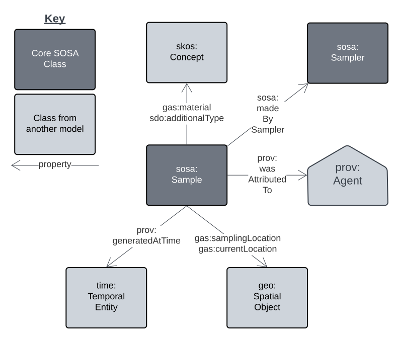

Geosample Model
{kind=link}

The model used for samples within this Supermodel is the Geosamples Model which "...describes physical attributes and important relationships of geological samples". This model is limited to just describing samples themselves and their direct relationships to other object but not those other objects.
Geosamples Model extensions
Within this Supermodel, the Geosamples Model is extended to allow for:
- Feature of Interest details - the thing sampled
- Observations on a Sample
Feature of Interest details
Samples can be made from other Samples and any other kind of thing, such as a Bore, Site, Rock Unit etc. This is always indicated using the predicate sosa:isSampleOf.
From the Sample's point-of-view, the thing it is a sample of is the Feature Of Interest, regardless of what kind of thing it is.
Furthermore, a Sample may be of another Sample and sampling chains may be of any length:
Part Sample isSampleOf Whole Sample isSampleOf Rock Unit.
Some models consider Bores and even Mines as sampling features, i.e. things that sample other things to produce samples, such as the Rock Unit the Bore is drilled in to. So we can have:
Part Sample isSampleOf Whole Sample isSampleOf Bore isSampleOf Rock Unit.
The things that samples are aiming to characterise are the Ultimate Feature of Interest so, as per the example immediately above, that would be the Rock Unit.
Observations on a Sample
Observations of the properties of samples are often made and the SOSA model represents this by having instances of sosa:Observation that target instances of sosa:Sample with the sosa:hasFeatureOfInterest predicate, just as Samples target other things.
Observations are very similar to Samples, but they produce Results which are normally categorisations or numerical measures of the properties of something, such as the gold content of a Sample's material.
The very detailed Geochemistry Model should be used for geochemistry observations of Samples.
An example:
ex:sample-x
a sosa:Sample ;
sosa:isSampleOf ex:sample-n ;
schema:material ex:Rock ;
schema:usedProcedure ex:CoreDrill ;
sdo:additionalType ex:CoreSectionHalf ;
.
ex:observation-y
a sosa:Observation ;
sosa:hasFeatureOfInterest ex:sample-x ;
sosa:userProcedure ex:procedure-z ;
sosa:observedProperty ex:occurence-of-gold-in-a-matrix ;
sosa:hasResult [
a sosa:Result ;
qudt:unit unit:PPM ;
rdf:value "124.0"^^xsd:float ;
] ;
.
Vocabularies
Vocabularies supporting this model and the positions within the model they occupy are listed and described below.
| Vocabulary | Description | Model Position |
|---|---|---|
| GSWA Sample Materials Derived from GA's Material Type vocabulary |
Types of material which samples may consist of | Range value for schema:material predicate used on a Sample instance |
| GSWA Specimen Types Derived from ODM's Specimen Type vocabulary |
Types of physical Specimen | Range value for sdo:additionalType predicate used on a Sample instance |
| GSWA Sampling Methods Derived from GA's Sampling Method vocabulary |
Methods used to collect geological samples | Range value for sosa:usedProcedure predicate used on Sample and Sampling instances |
Mappings
Mappings from this model to other initiatives are described below.
IGSN Description Model
http://schema.igsn.org/description/
Coming
GeoSciML - GeologicSpecimenView
https://docs.ogc.org/is/16-008/16-008r1.html#443
Coming